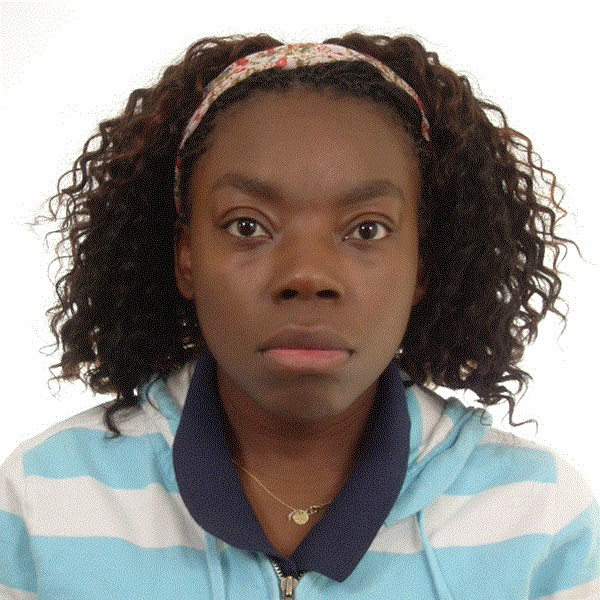

Physician · Health AI Innovator · Keynote Speaker
Dr. Sabine Fonderson · MD, MSc Paediatric Emergency, PhD Candidate
I work the front line of medicine, so I know exactly where it breaks. I take that reality to the stage, along with the AI, the smart snippets, and the hard ideas that can actually fix it.

TEDx Speaker & Practice Owner
Rotterdam · The Hague · Global
Expertise & Clinical Authority
Bridging daily general practice, epidemiological academic research, and proprietary AI software development to transform clinical care.
Owner of Huisartspraktijk MSF (Rotterdam), managing acute, chronic, and multilingual urban patient care.
Founder building AI patient simulators, smart EHR snippets, and Chrome extensions for clinicians.
Erasmus MC — Investigating child respiratory illness and the environmental impact of urban air pollution.
University of Edinburgh — Clinical decision making, trauma, and acute pediatric care expertise.
Zorggroep Rijnmond Dokters & Advisory Board member for Ksyos Digital Care Pathways.
Delivering unfiltered, evidence-backed keynotes on AI ethics, healthcare errors, and physician burnout.
The Origin Story
I practice medicine in a second language. That alone changes everything — how I document, how I communicate, and how I stay safe. After years of navigating high-pressure clinics, long days, and electronic health systems not built for multilingual doctors, I realized something had to change: I didn’t need to work harder. I needed to work smarter.
So I started coding solutions for myself: AI-powered patient simulators, smart snippets, and Chrome extensions designed to help doctors like me document faster, safer, and with more confidence. Today, these tools save me 30+ minutes a day, prevent burnout, and allow me to look my patients in the eye instead of staring at screens.
"Book me and you get the uncomfortable questions other speakers skip, backed by the clinical and technical credibility to make a room take them seriously."
Health AI & Clinical Software
Designed by a practicing physician who codes. Engineered for EHR speed, safe prescribing, foreign doctor onboarding, and clinical precision.
Interactive, voice-and-text enabled AI patient personas designed to train internationally qualified medical doctors (BIG registration) in Dutch clinical culture, communication, and consultation structure.
Automated snippet engine and Chrome extension built directly for clinicians to streamline electronic health record (EHR) note taking, multilingual consultation templates, and safe prescribing.
Automated medical speech-to-SOAP note generator tailored for multilingual consultations (Dutch/English/French) that captures clinical nuances and formats them into structured EHR records.
Data science pipeline linking GP pediatric respiratory consultations with geospatial environmental sensor air quality data (O3, NO2, PM2.5) across the Rotterdam metropolitan region.
Keynotes & Stage Moderation
Every talk is built around a question most rooms would rather skip, backed by the clinical credibility to make an audience face it.
A clear-eyed look at where AI actually belongs in medicine, where it is already failing patients, and what every healthcare leader needs to decide before the technology decides for them.
The hard truth about why patients quietly walk away from doctors, and what it takes to rebuild trust in a healthcare system optimized for everything except the human in the room.
How women and international professionals in medicine and business get sidelined, and the unglamorous tactical moves that actually break the ceiling. No platitudes, just what worked.
Why more screens, portals, and dashboards are pushing clinicians and patients further apart, and how to use technology without losing the relationship medicine runs on.
Moderating high-stakes panels and medical summits in English, Dutch, and French. Keeping experts honest, sharp, and on-point instead of letting sessions dissolve into polite nothing.
Writing & Thought Leadership
Over 65 articles exploring clinical AI development, physician burnout, multilingual medical practice, and health leadership.
Editor's Must-Read Selection
★ AI & Clinical Tech
Training internationally qualified medical doctors in Dutch clinical communication and culture through interactive AI simulation.
★ Leadership & Culture
An unfiltered look at the culture of martyrdom in clinical medicine, why self-sacrifice is normalized, and what it costs patient safety.
★ Physician Productivity
How coding custom browser snippets for EHR note taking saved 30 minutes a day and eliminated documentation burnout.
A curated set of AI prompts and documentation shortcuts designed specifically for multilingual doctors, GPs, and clinical teams to cut note-taking time by 40%.
Trajectory & Qualifications
Over 20 years of clinical practice, health innovation leadership, and doctoral research across the Netherlands and UK.
Huisartspraktijk MSF (Rotterdam)
Managing independent general practice, serving a diverse urban population with modernized AI-assisted workflows and multilingual consultations.
Erasmus MC (Rotterdam)
Conducting epidemiological research investigating how air pollution, environmental triggers, and socioeconomic disparities affect childhood illness and GP consultation rates.
Zorggroep Rijnmond Dokters & Ksyos
Shaping regional primary healthcare policy, healthcare governance, and digital care pathway implementation.
VBGA (Vereniging Buitenlands Gediplomeerde Artsen)
Led the national association for foreign-trained medical doctors in the Netherlands, accelerating registration and clinical integration.
The University of Edinburgh
Postgraduate clinical degree focusing on pediatric acute trauma, resuscitation, and evidence-based pediatric emergency care.
Leiden University
Medical degree, clinical clerkships, and surgical rotations within the Dutch university hospital network.
Media & Publications
Featured in national press, medical publications, and peer-reviewed journals.
"In mijn praktijk wil ik laten zien dat het anders kan" — On rebuilding general practice on my own terms and proving medicine can be done differently.
Read Feature ↗Named one of the women stepping up to help expats and students reach care when the pandemic shut them out.
View Nomination ↗Collection of unforgettable A&E medical cases — funny, shocking, and every one of them true.
View on Amazon ↗Academic Research Published In
Book Dr. Sabine
Whether you need a provocative keynote on AI in healthcare, an expert moderator for tense panel debates, or a health tech advisor, tell us about your event. We will be back to you within 48 hours.